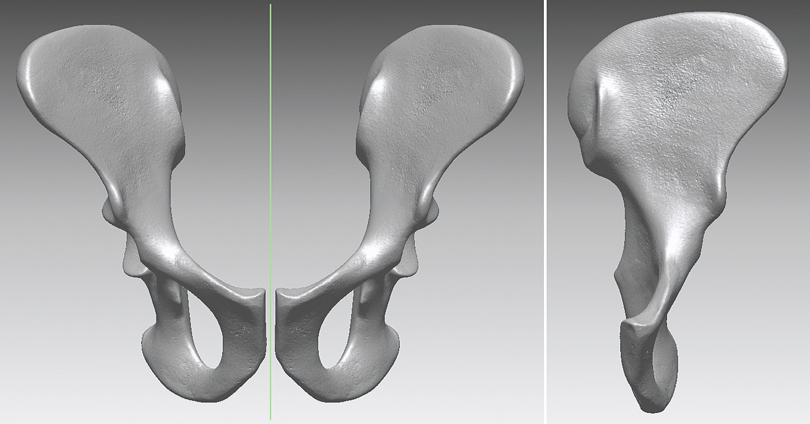

Gen Suwa, former anthropology graduate student at UC Berkeley, traveled to Aramis in the Middle Awash region of Ethiopia in 1992 to conduct anthropologic research.
While walking around Aramis, he noticed something shiny in the rocks.
A view similar to what Gen Suwa may have seen while walking around at Aramis, Ethiopia.
Upon closer inspection of the shining rock, Suwa noticed it was not a rock at all—it was a hominin tooth root.
A juvenile hominin jaw discovered by the team Gen Suwa was part of at Aramis, Ethiopia in 1994 (ARA-VP-1/129).
The archaeologists at Aramis sprang into action and began searching the area on their hands and knees for more hominin fossils.
In the following days, they found an additional hominin jaw piece with a baby tooth (deciduous molar) [ARA-VP-1/129, see above].
The researchers determined the features of the molar were so primitive that they had found a hominin species older than Au. afarensis, which was the oldest known hominin at the time.
The desert in the Middle Awash region of Ethiopia.
Two months later, UC Berkeley graduate student, Yohannes Haile-Selassie, spotted something else at Aramis: fossilized hand bones.
As the archaeological team searched the area, they found bone after bone: part of a pelvis, leg bones, an ankle, a foot, a hand, an arm, another jaw with teeth, a cranium. By January 1995, the team had unearthed almost an entire skeleton.
The remains were incredibly brittle, some crumbling as they held them. The scientists were afraid the fossil would wither away as they unearthed it.
They began cutting the ground around the skeleton. In one large chunk, the skeleton was shipped off to the National Museum of Ethiopia for careful removal from the 4.4 -million-year-old soil.
As the skeleton was removed, its pieces were carefully cast and scanned to be recreated digitally. 10 models later, Gen Suwa felt satisfied with his digitally reconstructed skull. And 14 models later, anatomist C. Owen Lovejoy of Kent State University felt satisfied with his reconstructed pelvis.
Diagram and photo collage of the 2009 unearthing of Ardi.
Digitally-recreated ar. ramidus pelvis from the University Museum at the University of Tokyo, where Gen Suwa is a professor.
Next up: Important fossil finds of Ar. ramidus.